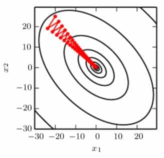

Deep Learning¶
Ian Goodfellow, Yoshua Bengio, Aaron Courville
2016, MIT Press, deeplearningbook.org
Linear Algebra¶
Norms
The \(L^p\) norm is given by
for \(p\in\mathbb{R}\), \(p\ge1\).
The \(L^1\) norm is commonly used when the difference between zero and nonzero if very important. Every time an element of \(\boldsymbol{x}\) moves away from 0 by \(\varepsilon\), the \(L^1\) norm increases by \(\varepsilon\).
The \(L^\infty\), also known as Chebyshev distance is defined by
Analogous to \(L^2\) norm (Euclidean distance), the Frobenius norm
measures the size of a matrix.
Orthogonal Matrix
An orthogonal matrix is a square matrix whose rows and columns are respectively mutually orthonormal:
which implies that
Eigendecomposition
Suppose a square matrix \(\boldsymbol{A}\) has \(n\) linear independent eigenvectors \(\{\boldsymbol{v}^{(1)}, \boldsymbol{v}^{(2)}, \cdots, \boldsymbol{v}^{(n)}\}\) with corresponding eigenvalues \(\{\lambda_1,\lambda_2,\cdots,\lambda_n\}\). We concatenate all of the eigenvectors to form a matrix \(\boldsymbol{V} = [\boldsymbol{v}^{(1)}, \boldsymbol{v}^{(2)}, \cdots, \boldsymbol{v}^{(n)}]\), and all of the eigenvalues to form a vector \(\boldsymbol{\lambda}\). The eigendecomposition of \(\boldsymbol{A}\) is then given by
Proof:
Every real symmetric matrix can be decomposed into real-valued eigenvectors and eigenvalues
where \(\boldsymbol{Q}\) is an orthogonal matrix composed of eigenvectors of \(\boldsymbol{A}\), and \(\boldsymbol{\Lambda}\) is the diagonal metrix composed of eigenvalues. By convention, we usually sort the entries of \(\boldsymbol{\Lambda}\) in descending order.
Singular Value Decomposition
SVD rewrite \(\boldsymbol{A}_{m\times n}\) as
其中 \(\boldsymbol{U}\) 是 \({m\times m}\) 的正交矩阵，由左奇异向量构成每一列；\(\boldsymbol{D}\) 是 \({m\times n}\) 的对角矩阵，由奇异值构成对角项；\(\boldsymbol{V}\) 是 \({n\times n}\) 的正交矩阵，由右奇异向量构成每一列。
The left-singular vectors of \(\boldsymbol{A}\) are the eigenvectors of \(\boldsymbol{AA}^\top\). The right-singular eigenvectors of \(\boldsymbol{A}\) are the eigenvectors of \(\boldsymbol{A}^\top\boldsymbol{A}\). The non-zero singular values of \(\boldsymbol{A}\) are the square roots of the eigenvalues of \(\boldsymbol{AA}^\top\), the same for \(\boldsymbol{A}^\top\boldsymbol{A}\).
The Moore-Penrose Pseudoinverse
\(\boldsymbol{A}\) 的摩尔-彭罗斯广义伪逆定义为
Pratical algorithms for computing the pseudoinverse are based on the formula
where \(\boldsymbol{U}\), \(\boldsymbol{D}\) and \(\boldsymbol{V}\) are the SVD of \(\boldsymbol{A}\), and the pseudoinverse \(\boldsymbol{D}^+\) is obtained by taking the reciprocal of the non-zero entries in \(\boldsymbol{D}\) and then taking the transpose of this matrix.
若 \(\boldsymbol{Ax}=\boldsymbol{y}\) 有多解，则由 \(\boldsymbol{x}=\boldsymbol{A}^+\boldsymbol{y}\) 得到的解是使得 \(\Vert\boldsymbol{x}\Vert_2\) 最小的那一个；若无解，则得到的解使得 \(\Vert\boldsymbol{Ax}-\boldsymbol{y}\Vert_2\) 最小。
The Trace Operator
矩阵的迹定义为方阵主对角线上各元素之和
It provides another way of writing the Frobenius norm
若下式有意义，则
只要各因子的形状使得乘积是方阵，上式就成立。
Example: Principal Components Analysis
PCA 的目的在于将一系列的点压缩存储，并且使得精度损失尽可能少。具体地来说，对于每一个点 \(\boldsymbol{x}\in\mathbb{R}^n\)，构建映射 \(f\) 使其映射到 \(\boldsymbol{c}^{(i)}\in\mathbb{R}^l\)，而且 \(n>l\). 同时需要构建解码映射 \(g\)，使得 \(g(\boldsymbol{c})\) 尽可能接近 \(\boldsymbol{x}\). 在 PCA 中，\(g(\boldsymbol{c})=\boldsymbol{Dc}\)，\(\boldsymbol{D}\in\mathbb{R}^{n\times l}\)，并且 \(\boldsymbol{D}\) 各列互相规范正交。
记每一个 \(\boldsymbol{x}\) 对应的最佳编码结果为 \(\boldsymbol{c}^*\)，则有
取到最小值时，有
故
解码得到的信息为
现在考虑所有的点。为了使得误差最小，令
同时须满足 \(\boldsymbol{D}^\top\boldsymbol{D}=\boldsymbol{I}_l\)。 令 \(\boldsymbol{X}\) 每一行对应一个点 \(\boldsymbol{x}^{(i)}\)，并先考虑 \(l=1\) 的情况，替换符号并整理得
同时满足 \(\boldsymbol{d}^\top\boldsymbol{d}=1\). 继续简化上式，
根据特征值分解理论，\(\boldsymbol{d}\) 是对应 \(\boldsymbol{X}^\top\boldsymbol{X}\) 最大特征值的特征向量。则当 \(l\) 任意时，\(\boldsymbol{D}\) 由最大的 \(l\) 个特征值对应的特征向量组成。
Probability and Information Theory¶
Common Probability Distributions
Bernoulli Distribution 伯努利分布
Multinoulli Distribution 分类分布
离散型随机变量 \(\mathrm{x}\) 一共有 \(k\) 种情况，其分布由向量 \(\boldsymbol{p}\) 给出：
Gaussian Distribution 正态分布
令 \(\beta = \sigma^{-2} \in (0, +\infty)\)，称之为精度（Precision），则有
对于多维情况，则参数变为期望向量 \(\boldsymbol{\mu}\) 和协方差矩阵 \(\boldsymbol{\Sigma}\). \(\boldsymbol{\Sigma}\) 必然为正定的对称矩阵。
Exponential Distribution 指数分布
Laplace Distribution 拉普拉斯分布
Dirac Distribution 狄拉克分布
Empirical Distribution 经验分布
Useful Properties of Common Functions
Softplus 函数：
The name of the function comes from the fact that it is a "softened" version of ReLU:
Sigmoid 函数：
以下性质值得记忆：
Information Theory
信息的含量取决于此信息代表的事件发生的可能性。低概率事件包含的信息值高，高概率事件的信息则低，同时独立事件的信息值具有可加性。由上面的性质，可以得到事件 \(\mathrm{x}=x\) 的自信息（self-informaion）为
由于使用自然对数，此处 \(I(x)\) 的单位为 nats，一个 nat 对应概率为 \(\mathrm{e}^{-1}\) 的事件。如果使用以 \(2\) 为底的对数，则单位为比特。
香农熵用于衡量一个概率分布的不确定性：
也就是从一个概率分布中得到的信息量的期望。比较集中的分布熵值低，分散的分布熵值高。
KL 距离（Kullback-Leibler divergence）衡量两个分布之间的差异：
KL 距离总是非负的，而且它并不对称，即 \(D_{\mathrm{KL}}(P\Vert Q)\ne D_{\mathrm{KL}}(Q\Vert P)\).
交叉熵（cross-entropy）的定义是
若以 \(Q(x)\) 为参数，则交叉熵和 KL 距离同时有最值。
Structured Probabilistic Models
机器学习中会涉及到大量随机变量的分布，如果用单个函数分别描述，将会十分复杂，导致效率低下。为此，我们将概率分布分解，如
由此将一些随机变量表示为有向图，有
还有一种形式，以无向图来表示，这种模型也成为马尔可夫场。此图中，每一个全连接的子图都用 \(\mathcal{C}\) 来表示，它对应一个联合分布函数 \(\phi(\mathcal{C})\). 那么这个模型的概率分布分解为
其中 \(\mathcal{C}^{(i)}\) 互不包含，比例因子 \(Z^{-1}\) 保证各项因子之和为 \(1\).
Numerical Computation¶
Overflow and Underflow
数值处理的根本困难在于用有限位的计算机处理连续的实数，这导致了舍入误差（rounding error)。一种破坏力极大的舍入误差是下溢，即一个非常小的数舍入为零。还有一种误差是上溢。
以 softmax 函数为例：
令 \(x_i=c\in\mathbb{R}\)，那么函数值必然为 \(1/n\). 但是在实际计算时，若 \(c\) 是非常小的负数，导致分母下溢，则结果变为未定义。如果 \(c\) 是很大的正数，那么导致上溢，同样结果未定义。解决的办法是利用性质 \(\operatorname{softmax}(\boldsymbol{x})=\operatorname{softmax}(\boldsymbol{x}-c)\)，将 \(\boldsymbol{x}\) 换为 \(\boldsymbol{x}-\max x_i\) 即可。
Poor Conditioning
这种误差指的是微小的输入扰动导致输出大幅变化。这会让之前产生的误差放大。例如函数 \(f(\boldsymbol{x}) = \boldsymbol{A}^{-1}\boldsymbol{x}\)，当\(\boldsymbol{A}\) 可以做奇异值分解时，它的 condition number 为
如果这个数非常大，就会导致这个函数非常敏感。
Jacobian and Hessian Matrices
函数 \(f: \mathbb{R}^m\rightarrow\mathbb{R}^n\) 的雅可比矩阵 \(\boldsymbol{J}\in\mathbb{R}^{m\times n}\) 由下式决定：
\(f\) 的海森矩阵由下式决定
即
由克莱罗定理（Clairaut Th.），对于具有连续一阶偏导的实函数，\(\boldsymbol{H}\) 是实对称的。所以可以将其分解为实特征值与规范正交的特征向量 \(\boldsymbol{d}\)。对于每一个 \(\boldsymbol{d}^{(i)}\)，它所指方向上有
在其他方向上，\(f\) 的二阶导数可以由特征值加权平均求得。
对于单位向量 \(\boldsymbol{u}\)，有
二阶方向导数可以衡量这里的梯度下降的效果。记 \(\boldsymbol{g}=\nabla f\)，有泰勒展开
设学习率为 \(\varepsilon\)，则 \(\boldsymbol{x} = \boldsymbol{x}^{(0)}-\varepsilon\boldsymbol{g}\)，代入得
若 \(\boldsymbol{g}^\top\boldsymbol{Hg}<0\)，则在一定的 \(\varepsilon\) 范围内，\(f\) 都是下降的，但是为了求得这个范围，还需要更进一步的算法。如果 \(\boldsymbol{g}^\top\boldsymbol{Hg}>0\)，则可以直接得到
在高维空间，可以使用海森矩阵来判断驻点的极性。当驻点的海森矩阵所有的特征值都为正（正定）时，此处为极小值。相反如果为负定，则有极大值。若特征值有正有负，则函数在某一个截面是极大值，在另一个截面极小。
When the Hessian matrix has a poor condition number, gradient descent performs poorly. This is because in one direction the derivative increases rapidly while much more slowly in another direction. Gradient descent do not know that it needs to explore preferentially in the direction where the directive remains negative for longer. Also, it becomes difficult to choose a good step size to avoid overshooting the minimum. As the example shown below:

由于最大曲率在右下到左上的方向取得，而事实上极值正好在垂直方向，导致梯度下降的路径非常曲折，沿着山谷摇摆下降，浪费了大量时间。
一个最简单的解决办法是牛顿法。首先做泰勒展开
求得驻点为
若 \(f\) 在附近可以近似为正定二次函数，则迭代上式便可以得到极值。这个方法在鞍点处则会失效。
本书所采用的优化算法几乎不能肯定得到最优解。因为深度学习中涉及的函数非常复杂。有一些条件可以提供一些对优化算法有利的限制，比如李普希茨连续，可以保证输入的小扰动不出现输出的过大变化。以及海森矩阵处处半正定的函数，即凸优化问题。
Constrained Optimization
KKT 法（Karush-Kuhn-Tucker approach）是一种约束优化的一般方法，是拉格朗日乘数法的推广。首先描述限制区域
广义拉格朗日函数（generalized Lagrangian）为
那么优化问题
即转化为了
Example: Linear Least Squares
求以下函数的最小值：
可以使用梯度下降和牛顿法，并且由于此函数是正定二次的，牛顿法可以一步直接得到解。
如果加上限制 \(\boldsymbol{x}^\top\boldsymbol{x}=1\)，使用拉格朗日乘数法，
极值点处，有
得
Machine Learning Basics¶
Learning Algorithm
通常来说，机器学习包含三个要素，它们分别为任务（T）、性能（P）和经验（E）。
The Task, T
机器学习有非常多种形式，它们分为几大类：
-
Classification：
构造函数 \(f:\mathbb{R}^n\rightarrow\lbrace1, 2, \cdots, k\rbrace\). -
Classification with missing inputs：
构造多个分类函数，以对应某些输入的缺失。 -
Regression：
构造函数 \(f:\mathbb{R}^n\rightarrow\mathbb{R}\)，和分类相似，但是输出不同。 -
Transcription：
将一些非结构化的信息转换为离散，结构化的形式。包含了 OCR 和语音识别等。 -
Machine translation.
-
Structured Output：
这是一个范围很广的领域，上面的两种机器学习也能包含进来。其主要特征是输出一种数据结构，其各元素之间有重要关系。其中例子还有语义分析和图像分割。 -
Anomaly detection：
例子有信用卡盗用检测。 -
Synthesis and sampling：
通过一些样例，产生相似的数据。如语音合成，自动纹理生成等。 -
Imputation of missing values.
-
Denoising：
根据被噪声污染的数据 \(\hat{\boldsymbol{x}}\)，去噪得到原数据 \(\boldsymbol{x}\) 或者概率分布 \(p(\boldsymbol{x}\ \vert\ \hat{\boldsymbol{x}})\) . -
Probability estimation.
Example: Linear Regression
线性回归的目标在于计算
其中，\(\boldsymbol{x}, \boldsymbol{w}\in\mathbb{R}^n\). 使用最小二乘，即最小化 MSE（mean squared error）
令 \(\nabla_\boldsymbol{w}\mathrm{MSE} = 0\)，得
即使用训练集数据求得回归函数。
Capacity, Overfitting and Underfitting
两个目标： 1. Make the training error small. 2. Make the gap between training and test error small.
The no free lunch theorem states that averaged over all possible data sets, every classification algorithm has the same error on test set.
Add an penalty call a regularizer to the cost function, to reduce the generalization error.
Hyperparameters and Validation Sets
One example of hyperpatameters is the degree in the polynomial regression. It is not trained by the training set. To solve this problem, we split the training sets into two, one still training set, another validation set. Validation sets guide the algorithm to choose hyperparameters after training, allowing them to update accordingly. Typically, Training : Validation = 8 : 2.
But spiliting the set leads to the test set being small. If the dataset is too small, we need to use all of the examples in the estimation of MSE, and it comes to the cross-validation.
One common algorithm is K-fold:
Define
\(\mathbb{D}\) be the given dataset, with elements \(\boldsymbol{z}^{(i)}\),
\(A\) be the learning algorithm, learned function as its output,
\(L\) be the loss function,
\(k\) be the number of folds.
\(\mathtt{KFold}\ (\mathbb{D}, A, L, k)\):
Split D into k mutally exclusive subsets D_i;
for i in [1, k]:
f_i = A(D-D_i)
for z_j in D_i:
e_j = L(f_i, z_j)
return e